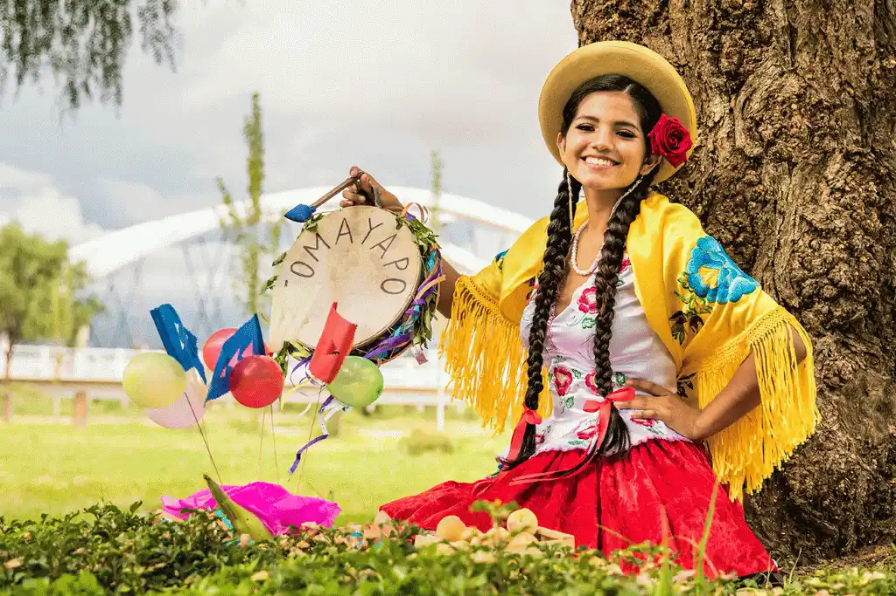

Explore Bolivia's Stunning Landscapes
Our curated expeditions not only offer stunning views & unforgettable experiences but also ensure that your travels support sustainable tourism practices, preserving the environment and empowering local communities.
Our Mission
To provide unforgettable travel experiences in Bolivia while promoting sustainable tourism, protecting natural landscapes, and supporting local communities.

Our Vision
To be recognized as Bolivia’s leading eco-friendly tour provider, inspiring travelers to appreciate and preserve the country’s unique beauty and cultural heritage.